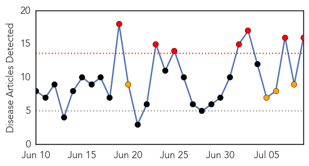
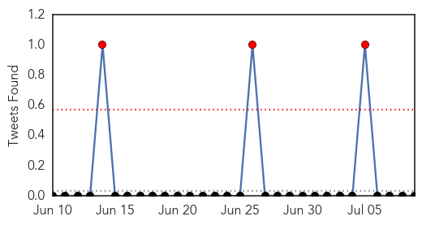

Chikungunya
30-Day Web Trend
1 alerts, 0 warnings

30-Day Twitter Trend
0 alerts, 0 warnings

Article Locations

Article Confidences

Top Articles:
- 0.990
- Guest column: Mosquito season buzzing with activity
- 0.988
- “Global Health” Must Mean Global Health
- 0.987
- Vanderbilt investigators develop potential antibody treatments against chikungunya
- 0.964
- ‘Reduce mosquito breeding sites’
- 0.785
- Potential treatment for chikungunya found
- 0.667
- If these rashes or fevers crop up, state wants to know
Top Tweets:
-
No tweets found for Jul 09, 2015
Dengue Fever
30-Day Web Trend
7 alerts, 4 warnings

30-Day Twitter Trend
3 alerts, 0 warnings

Article Locations

Article Confidences

Top Articles:
- 0.999
- MERS listed as notifiable disease
- 0.988
- Fiji: Dozens of chickenpox cases prompt health alert
- 0.987
- KBS World Radio
- 0.985
- Software launched to help doctors diagnose, treat dengue : India, News
- 0.964
- Dingell urges medical aid to fight Yemen’s dengue fever
- 0.964
- Govt says no dengue deaths, private hospitals in Bengaluru reject claim
- 0.909
- Hong Kong confirms second encephalitis case in a week
- 0.887
- Authorities reiterate cleaning of mosquito breeding sites
- 0.855
- Ignorance blamed for fever misdiagnoses
- 0.789
- Selangor records over 30,000 dengue cases, 84 deaths
- 0.739
- Dengue campaign to educate the public
- 0.690
- Humanitarian crisis in Yemen worries local Yemenis
- 0.656
- Vulnerable areas: Qaim directs KWSB to start chlorination of water
- 0.628
- For clean water: CM directs water board to expand scope of chlorination
- 0.608
- Qaim directs KWSB for necessary steps to start chlorination of water
- 0.607
- Solve garbage problem within a month, Selangor authorities told - Nation
Top Tweets:
-
No tweets found for Jul 09, 2015